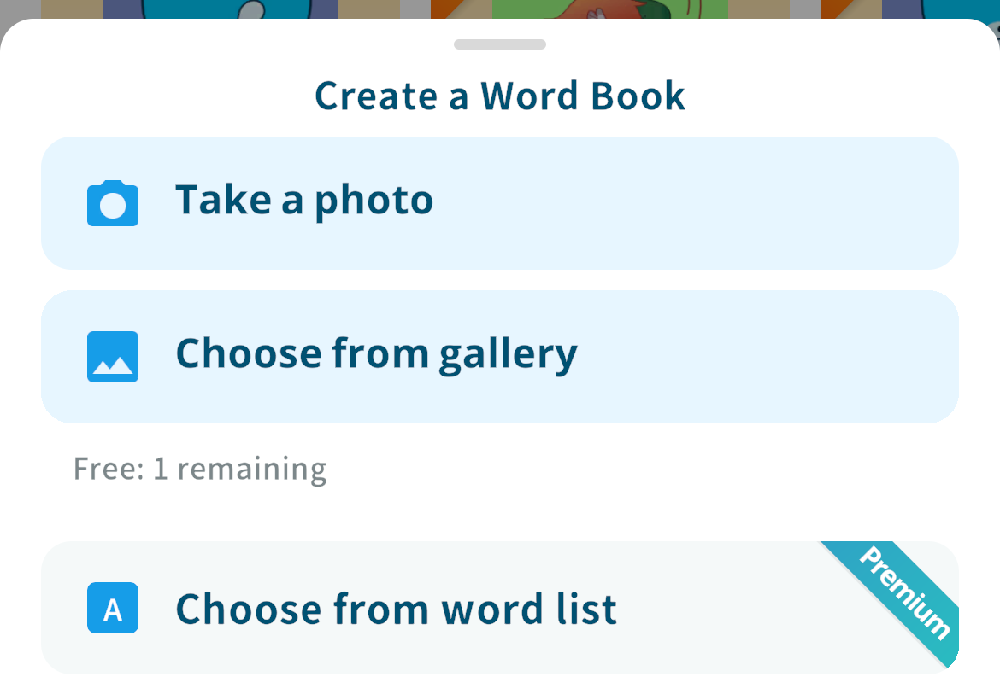
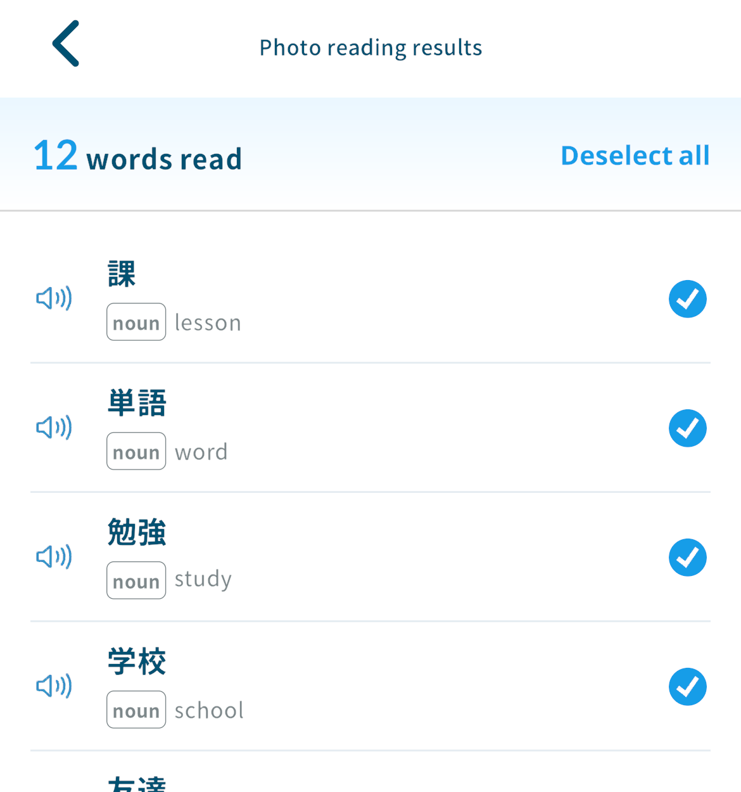
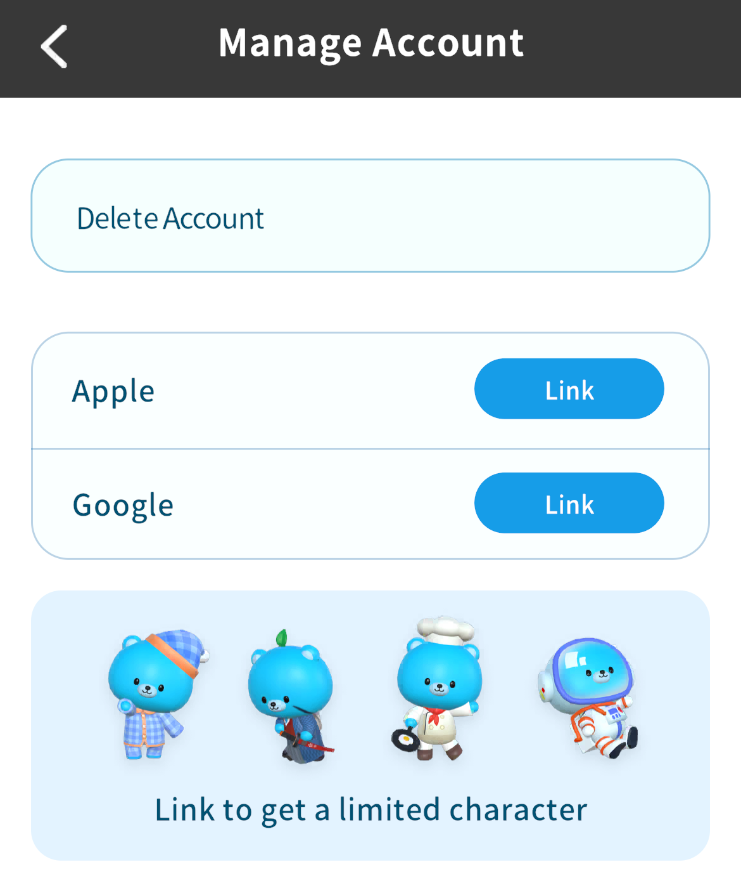
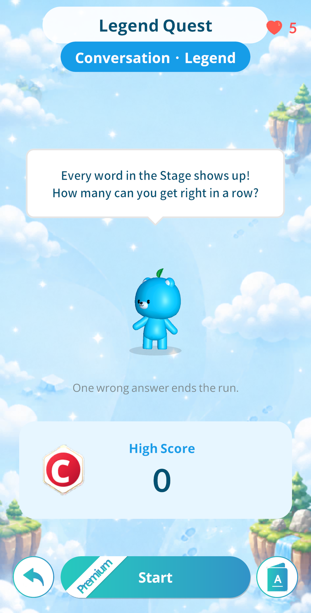
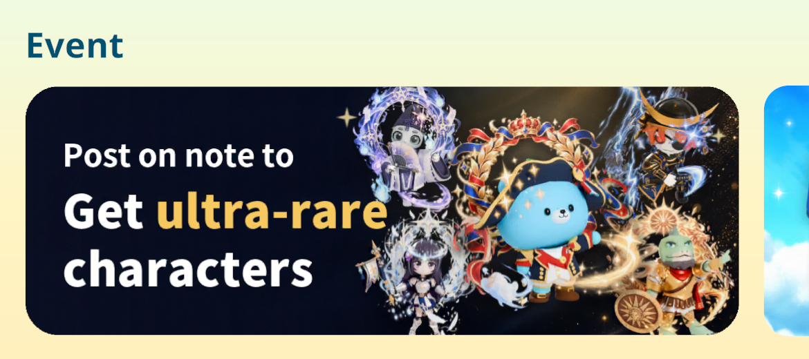

Create Wordbooks from Photos,
"Ogre Hard" Course,
and 3 More Additions
2026/10/9 17:00
Hi, this is Kamiya, the developer of Motitan and Motispi.
With the v12.1.0 update, we are adding new courses to Motitan, a feature that creates wordbooks and phrasebooks from photos, a limited character gift for linking your account, and stage Legend Quests. We have also started the note posting campaign.
Motitan: New Courses "Path of the English Conqueror" and "Ogre Hard"
We added "Path of the English Conqueror" and "Ogre Hard" to Motitan's English courses.
- "Path of the English Conqueror" covers about 24,500 words, from the very basics to the hardest words, so you can go from fundamentals to the top level in a single course.
- "Ogre Hard" collects about 5,400 difficult words not found in any other course. It is for people who find the other courses too easy.
- Reach Legend in either course to get a limited Mini MotiBear.

How to switch: Profile > Change Course
* You can also switch from "Change Course" in the header.
Motitan & Motispi: Create Wordbooks and Phrasebooks from Photos
You can now create wordbooks and phrasebooks, or add to existing ones, from photos of textbooks, vocabulary books, subtitles, articles, and more.
- Use "Take a photo" or "Choose from gallery" to load up to 10 photos at once.
- Pick the words or phrases you want from what was read, then create or add.
- Free plan: up to 2 uses in total. Premium: up to 10 uses per day.
- Text is read according to the language you are learning.


How to use:
Wordbooks > Create from photo
Wordbook details > Add Words > Photo
Phrasebooks > Create from photo
Phrasebook details > Add Phrases > Photo
* "Create from photo" is in the "+" button at the bottom right of the wordbook and phrasebook lists.
Motitan & Motispi: Link Your Account and Get a Limited Character
Link an Apple or Google account and we will give you one limited character you do not have yet, from the first four MotiBears.
- The gift is one time only.
- If you have not linked yet, a banner appears on Home. Tap it to open the "Manage Account" screen.
- Linking your account also lets you carry over your data when you change phones or delete the app.

How to link: Profile > Settings > Manage Account
Motitan & Motispi: Stage Legend Quests (Premium Only)
In Adventure, you can now take on a "Legend Quest" for each stage.
- A stage Legend Quest asks every word in that stage (phrases in Motispi) and ends at your first wrong answer.
- It unlocks once you clear the stage.
- Only Premium members can take it on.
- The course-wide Legend Quest is still available as before.

Motitan & Motispi: note Posting Campaign
We have started a campaign where you get a limited character for writing and reporting a note article about Motitan or Motispi.
- To qualify, publish an article of 500 characters or more with the "#モチタン" or "#モチスピ" tag, then report the article URL.
- Make sure the article is published, not a draft, before you report it.
- One character per article, up to 5 articles for all 5 limited characters. Characters are given at random with no duplicates.
- This campaign may change or end without notice.
- This campaign is not affiliated with note, Inc.

Tap the banner on Home to open the campaign page. After writing your article, press "Report a post" and submit the article URL.
Sou Kamiya, Developer